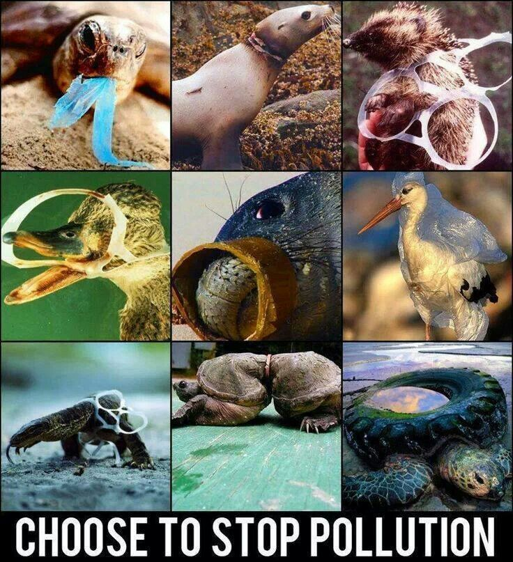
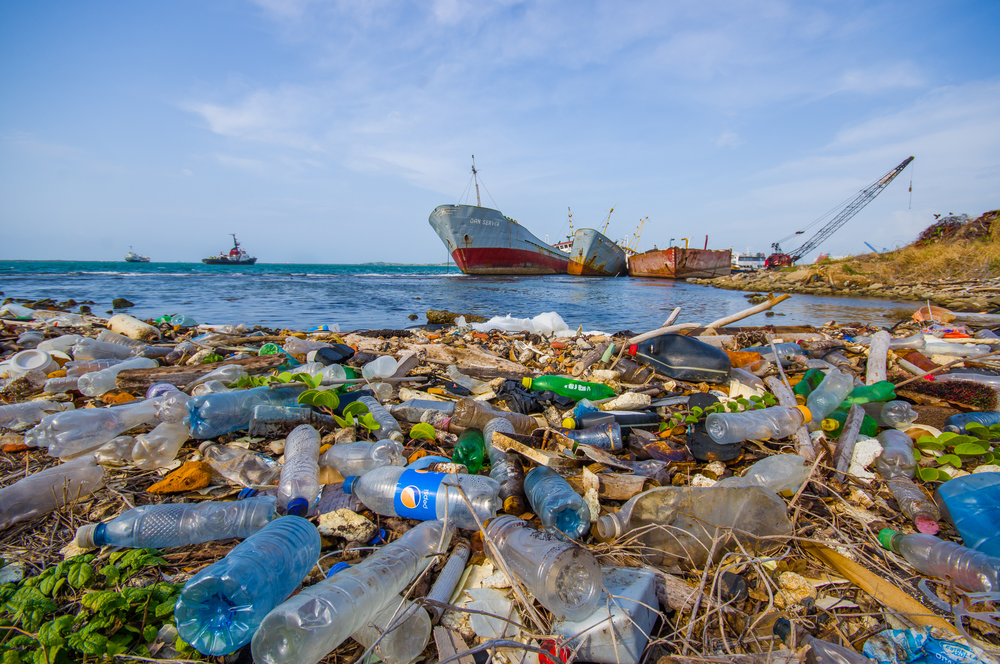

Each year, billions of pounds of trash and
other pollutants enter the ocean
Let's invent our way out of this mess. Together.

Love for Ocean
The ocean stirs the heart, inspires the imagination
and brings eternal joy to the soul. No water, no life,
no blue, no green.
Beach cleanups help keep microplastics out of the garbage patches
These days plastic seems to be everywhere;
unfortunately, that includes many parts of the ocean,
from the garbage patches to Arctic sea ice.
With this pollution increasingly in the form
of tiny plastic bits, picking up a few bottles
left on the beach can feel far removed from
the massive problem of miniscule plastics
floating out at sea. However, these two
issues are more closely connected than you
may think. But how do we get from a large
plastic water bottle, blown out of an overfilled
trash can on a beach, to innumerable plastic
pieces no bigger than a sesame seed
Fact 1: Plastics are the most common
element found in the ocean today. Plastic
in particular is harmful to the environment
as it does not break down easily and is often
mistaken as food by marine animals. Fact 2: According to a study, 18 billion pounds
of plastic trash winds up in our oceans each year.
To put that in perspective, it’s enough
trash to cover every foot of coastline around
the world with five full trash bags of plastic…compounding
every year Fact 3: There are 25 trillion pieces
of plastic debris in the ocean. Of that,
269,000 tons float on the surface, while
some four billion plastic microfibers per
square kilometer litter the deep sea.

We want to change the world’s attitude
towards plastic within a generation
The problem of plastic pollution is
growing exponentially every year; we are
producing more than 300 million tons of
plastic, half of this is designed for single
use, and each year around 8 million tons
of it ends up in our oceans. We can solve
this problem and we can do it by educating
and engaging everyone in a conversation
to rethink plastic.
Visualizing how garbage patches form
OAs you might gather from the visualization,
the gyres, where "garbage patches" are located,
represent massive, dynamic areas of the ocean
that are constantly moving and changing—and as
a result, are also bringing trash and other
marine debris with them. Rather than giant,
floating islands of trash that you can see
from satellites (you can't), "garbage patches"
are ocean gathering places for what are mainly
tiny bits of plastic dispersed throughout the
water column. Still fuzzy on what the garbage
patches are and are not?
Fact 4: 80% of trash in the ocean is
from land-based sources, including individuals,
industry and improper waste management/infrastructure.
Only 20% is the result of ocean-based sources,
such as the fishing, shipping, and cruise ship
industries. Fact 5: There is an island of garbage
twice the size of Texas inside the Pacific
Ocean: the North Pacific Gyre off the coast
of California is the largest oceanic garbage
site in the entire world. It’s here that
the number of floating plastic pieces in
the water outnumbers total marine life six
to one in the immediate vicinity.